Twin Peaks · Retro 2D · R102E
Gauntlet grafica + storia
R102E · Cast ridisegnato, non soltanto reso nitido
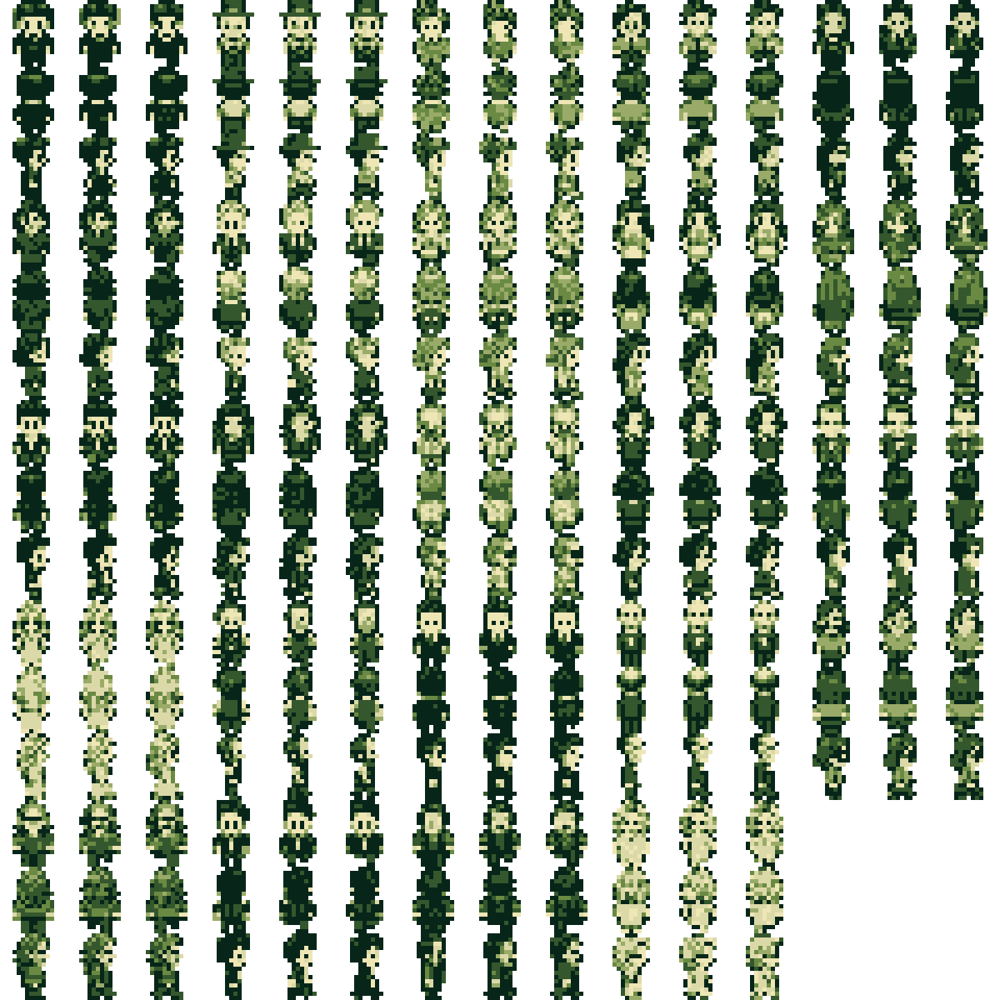
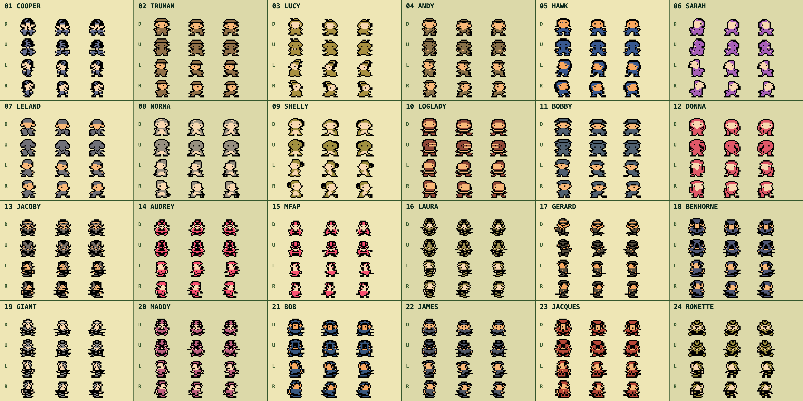
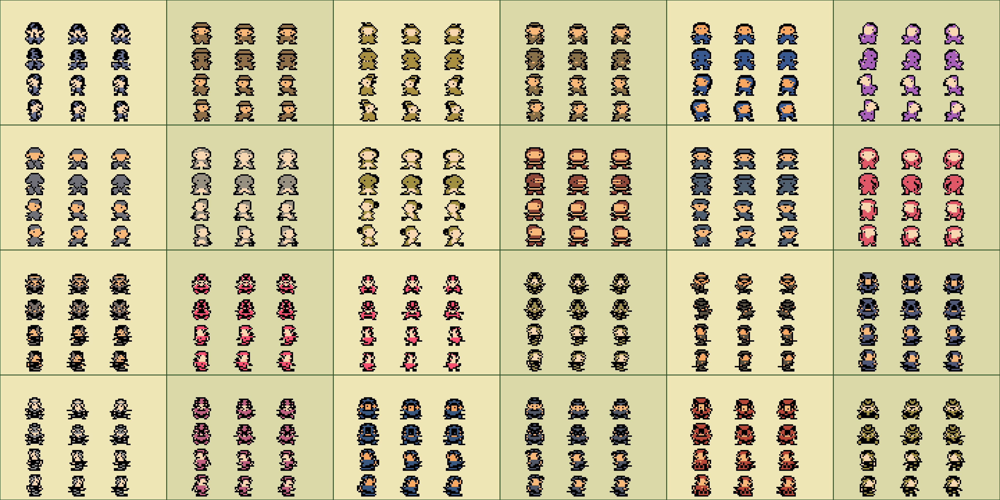
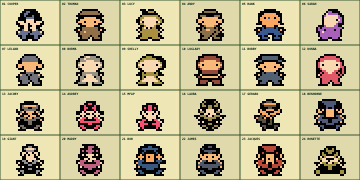
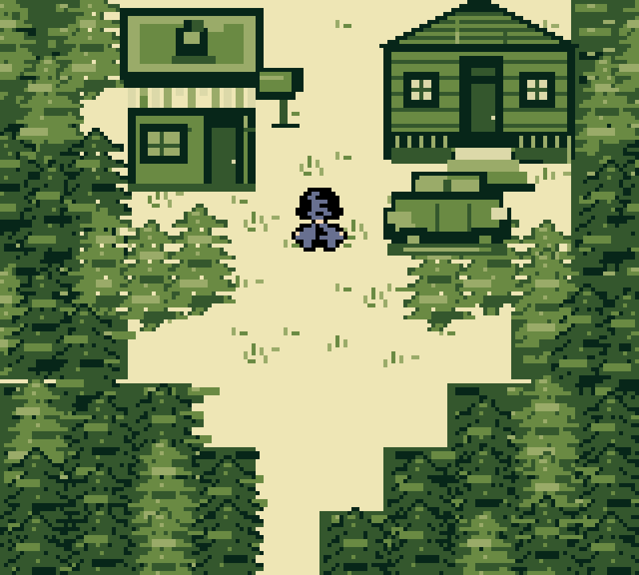
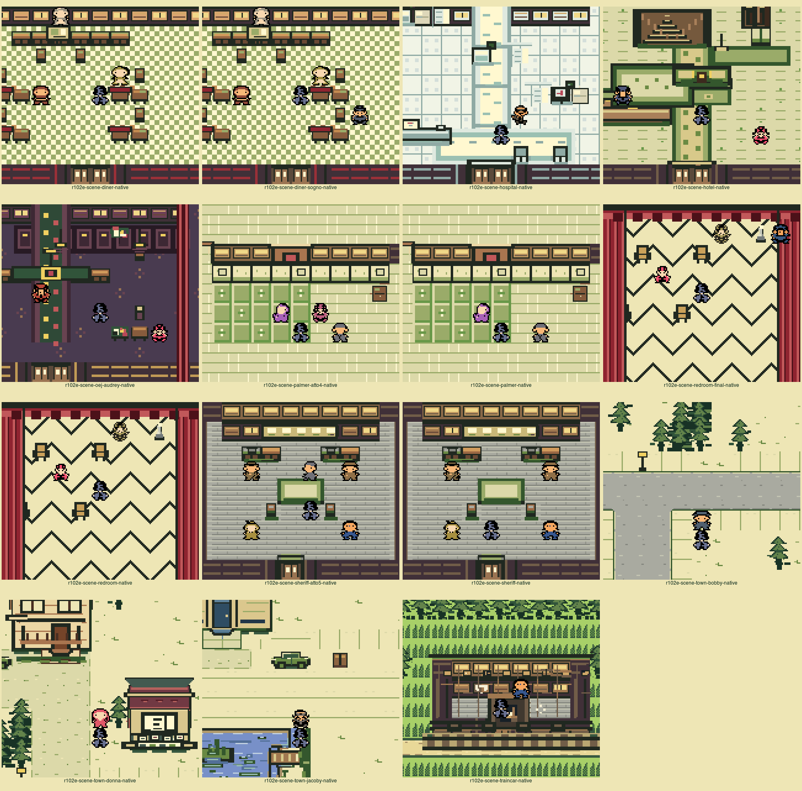
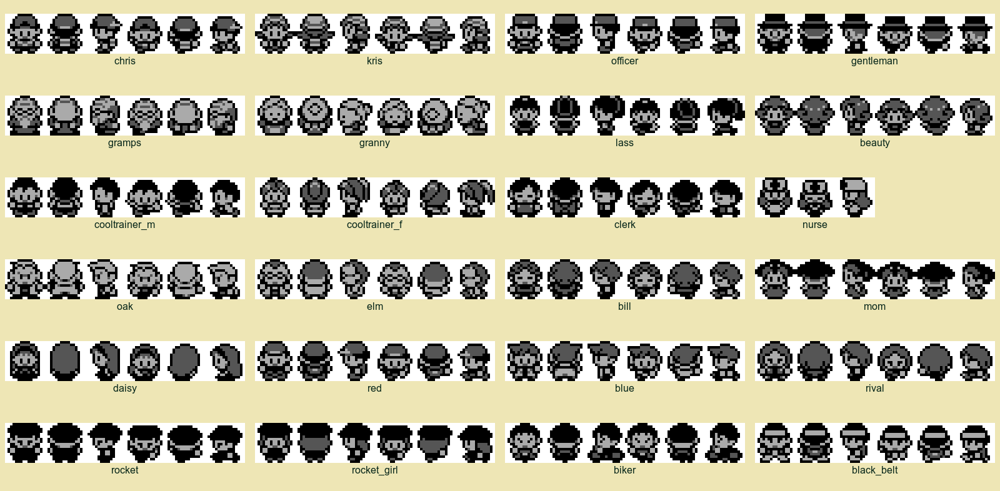
Perché R102E sostituisce il falso pass precedente
R101F era tecnicamente nitido ma ancora generico e rigido. Il Gauntlet riaperto ha imposto frame nativi a 1×, tavola cieca, animazione temporale e scene reali. R102E usa matrici authored esplicite: cappello di Andy, chignon di Lucy, profilo lungo di Hawk, postura di Sarah, grembiuli distinti, ciocco separato della Log Lady e asimmetria di Gerard sono ora forma, non sola tinta. Tutti i 24 attori restano entro 16×16, tre toni, piedi a riga 15 e contorno minimo 94,5%.
R100P · Cittadina ricostruita sulla grammatica Game Boy
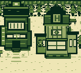
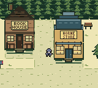
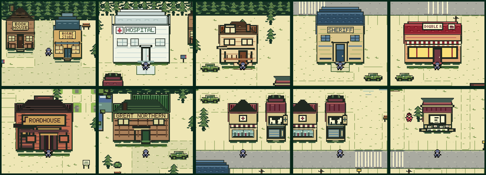
Veto chiusi
Book House non è più una libreria generica; Double R mostra nome e tazzina; Great Northern e Roadhouse sono riconoscibili; Horne Store usa una vera targa Art Déco; ospedale, Sheriff e Palmer allineano porta, soglia e percorso alla collisione reale.
R100P · Oggetti, percorsi e collisioni leggibili
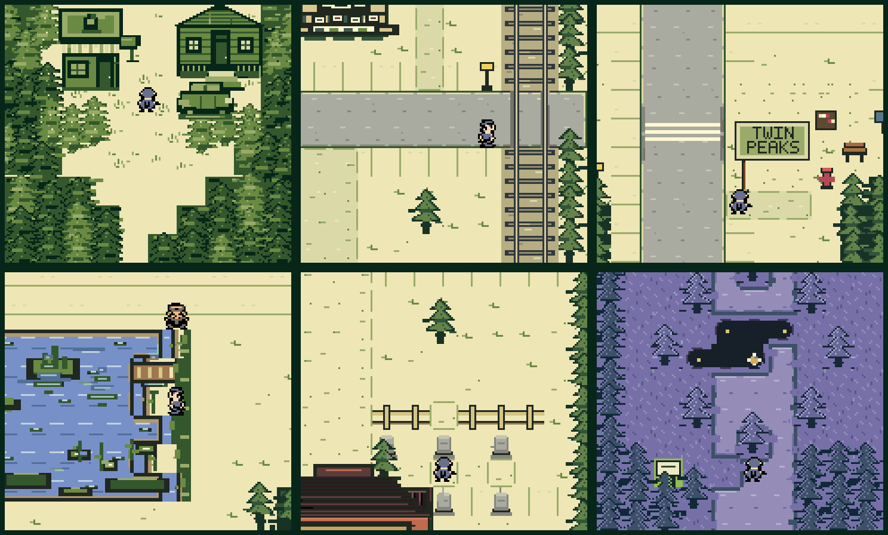
Arte e mappa dicono la stessa cosa
L’imbuto iniziale segue le collisioni riga per riga e conserva un asse percorribile 6→4→2→1 tile. Negozio, baita, cassetta postale e automobile coincidono con i loro bounds. La ferrovia è continua, ma l’attraversamento conserva strada e passabilità. Riva, lapidi e props mantengono sottofondo esplicito.
R98 · Matrice completa finale
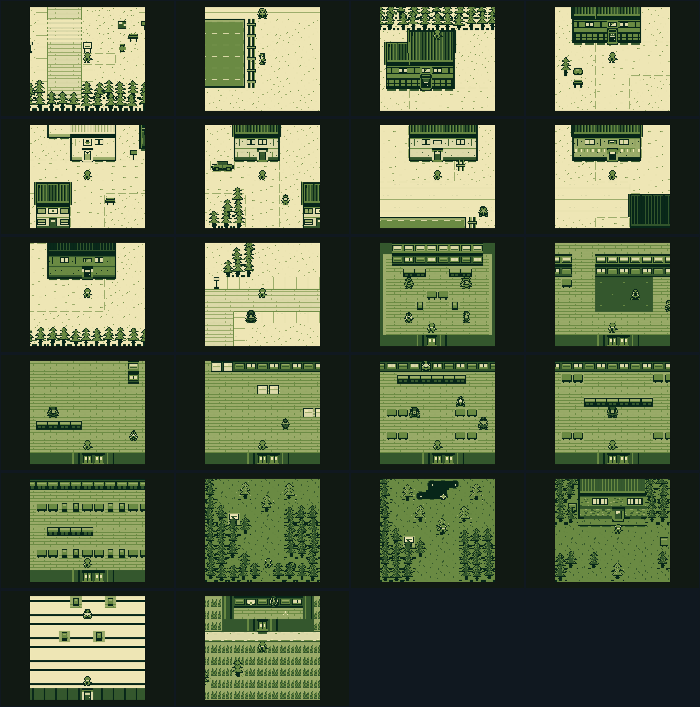
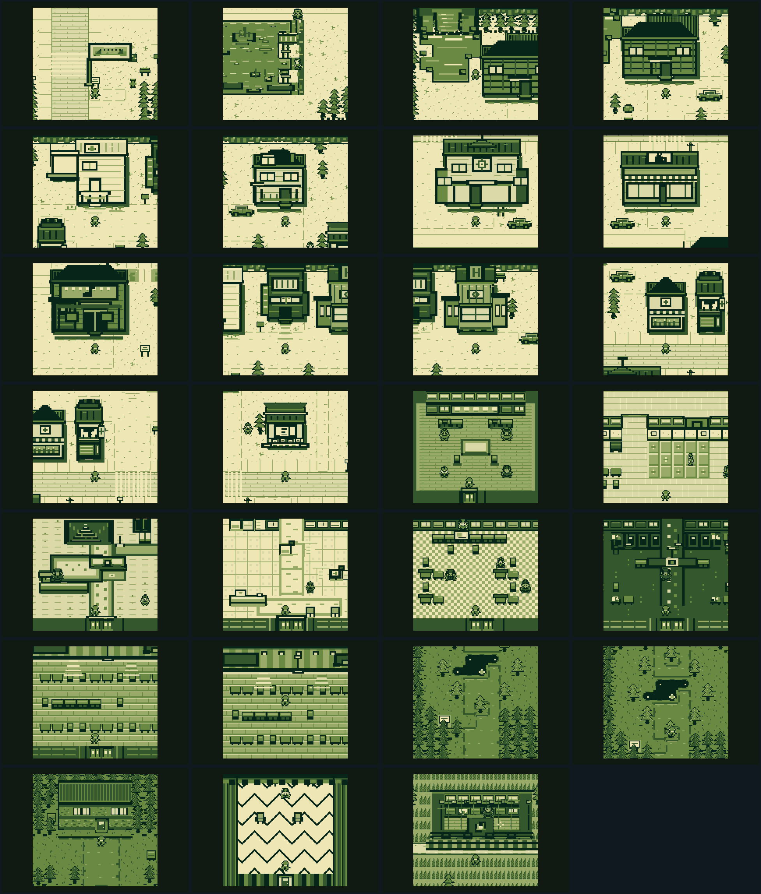
Gate esterno superato
Ogni round usa 27 catture native 160×144, test collisioni, playthrough desktop/mobile e due critici indipendenti. R98 chiude il gap con chiome sovrapposte, facciate materiche, ombre di contatto, soglie reali e danni variati sul vagone. Nessun dettaglio aggiunto mente sulla collisione.
Narrativa · diagnosi e riparazione
| Round | Voto | Risultato |
|---|---|---|
| Esame iniziale | 8,0 | 12 difetti: tempo, causazione, scelte cosmetiche, Laura poco concreta |
| Riparazione R2 | 9,1 | 10/12 chiusi; voci, reazioni NPC, morte e obiettivi migliorati |
| Riparazione R3 | 9,7 · PASS | Finale post-alba, Laura concreta e agente, prompt unici, prove con provenienza, rami pagati |
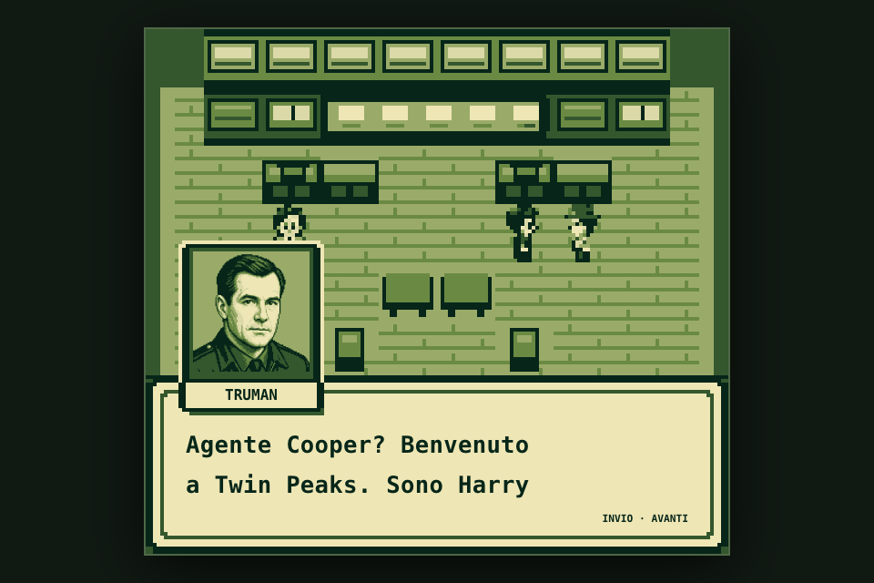
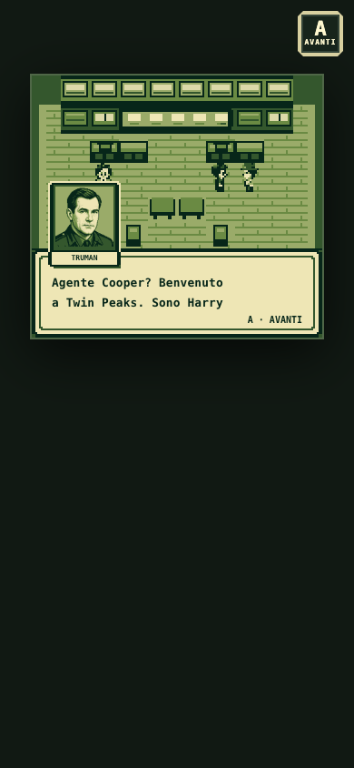
Release exam
23 suite, 4.354 controlli transazionali M4–M9, 193 controlli craft, 248 grounding, 35 riparazioni causali, 27/27 combinazioni finale e walkthrough completo da 86 acquisizioni. Copertura personaggi: 77/77 scene classiche, 52/52 varianti, 7/7 repeat. Voto lettore indipendente: 9,7/10.
R76 · Una sola Twin Peaks, senza salto visivo
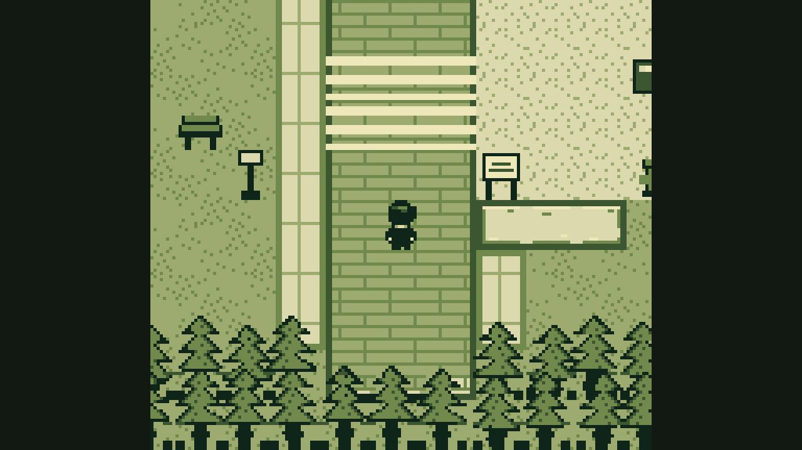
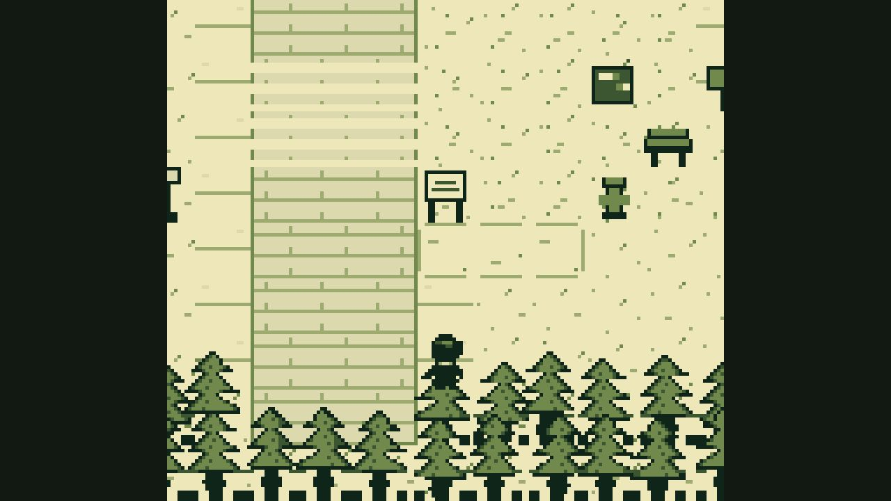
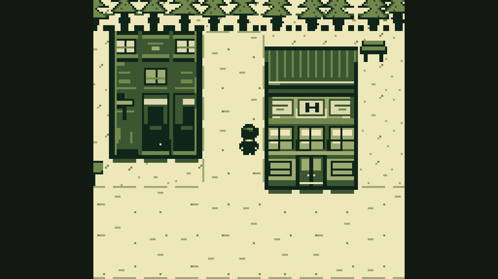
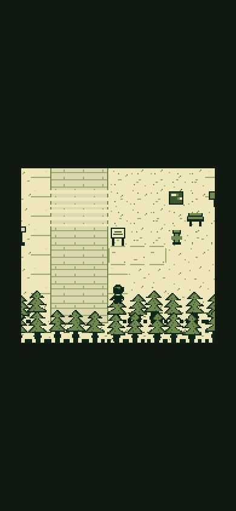
Transizione provata giocando · frame nativo: 6 colori esatti
Uscita sud della radura porta ora a (30,33), fra conifere e terreno chiaro. Prato, sentieri, strada, marciapiedi, ghiaia e sotto-alberi condividono palette e grammatica della reference; porte, NPC e progressione restano invariati.
R75 · Cooper generato, ora giocabile


Master R2 con giacca FBI, camicia e cravatta → nove celle 16×16 → sei toni + trasparenza. Destra e sinistra condividono il profilo tramite specchio. Se PNG non è pronto, renderer precedente resta fallback: nessun frame vuoto.
R74 · Dialoghi con respiro e righe bilanciate


1.480 elementi misurati, zero overflow
La battuta parte sulla stessa griglia della targhetta. Interlinea ridotta da 16 a 11 px nativi; parole e punteggiatura restano intatte. Verifica desktop 8× e mobile 2×.
R73 · Testo dialoghi ad alta risoluzione


762 elementi misurati, zero overflow
Stesso wrapping a due righe. Cornice, freccia, ritratto e mondo restano invariati. Canvas bitmap rimane fallback; scala tipografica segue fattore nativo intero su desktop e mobile.
R72 · Cast parlante completo
25/25 ritratti ad alta risoluzione
Ogni identità risolta dal motore dispone ora di asset 256×264, sei toni massimi e fallback canvas. Apri confronto completo: stato precedente a sinistra, nuovo ritratto a destra →
R71 · Ritratto Cooper su desktop


Mondo, box, cornice e nome restano nel framebuffer Game Boy 160×144. Solo interno del ritratto usa asset indicizzato ad alta risoluzione. Dettaglio preservato su desktop; posizione e proporzioni restano stabili su mobile.
Confronto usato dai critici


Andamento review cieca
| Build | Art director | Architettura/gioco |
|---|---|---|
| Baseline | 6,9 | 6,9 |
| R79 | 7,7 | 7,7 |
| R80 | 7,9 | 7,9 |
| R86 | 8,5 | 8,5 |
| R89 | 9,1 | 8,2 |
| R90 | 9,2 | 8,4 |
| R91 | 9,3 | 8,5 |
| R92 | 9,4 | 8,6 |
| R93 | 9,5 | 8,7 |
| R94 full | 9,1 | 8,73 |
| R95 full | 9,2 | 8,87 |
| R96B full | 9,3 · PASS | 8,91 · iterare |
| R97 full | 9,4 · PASS | 8,96 · iterare |
| R98 full | 9,5 · PASS | 9,00 · PASS |
| R100L edifici | audit mirato | 9,0–9,4 · 11/11 PASS |
| R100M foresta / Double R | 9,0 / 9,1 · PASS | collisioni invariate |
| R100N rifinitura | bordo chioma + targa | seam e padding corretti |
| R100O sistema completo | 9,20 · PASS | 11 edifici, strade, oggetti, attori e segnaletica |
| R100P audit finale | 9,6 · PASS | imbuto iniziale corretto; floor globale 9,0 |
| R102D movimento cast | 9,0–9,5 · PASS | 24 attori, articolazione relativa e cadenza Crystal |
| R102E identità cast | 9,0–9,4 · PASS | 24/24 riconoscibili a 1× e nella tavola cieca |
Gate automatici correnti
11/11strutture
23/23props
61/61accessi
10/10renderer
54/54production
23/23mobile
13/13touch
367smoke
86walkthrough
87/87town
44/44contratti JS
92/92browser + visual
Metodo
Build reale e cattura lossless.
Critici ricevono reference e frame, senza difesa autore.
Un gap osservabile per giro; correzione mirata.
Suite completa prima del deploy.